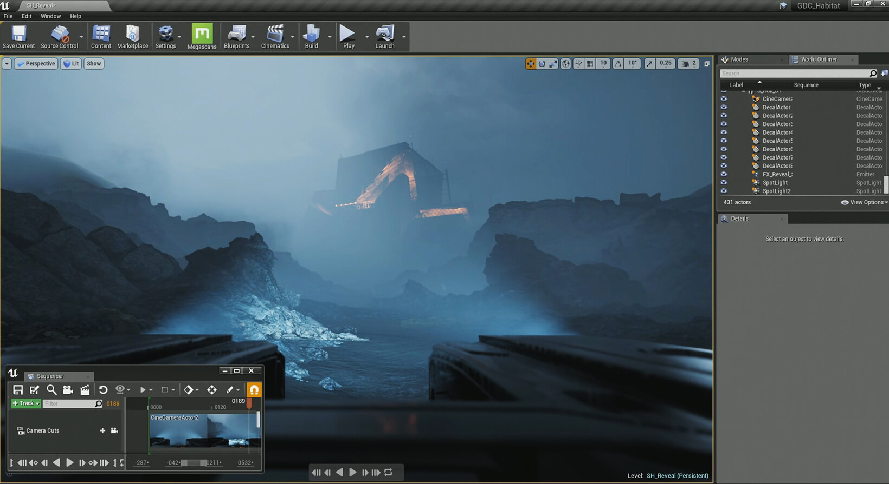

Unreal engine...
I want to start using a engine that lets you create 3d games that dont have stupid limitations. I am moving away from the wick editor for a more advanced engine. Now this was a tough decision but I will be starting to use this engine from now on. Dont expect any games for a while now. I want to take my time learning how to use this new stuff.
I mean, I have to learn an entire new language, engine layout, and plus I have to learn how to do modeling. I am trash at art and stuff like that so dont expect much from me...
Anyways I will keep you guys posted on how I am doing learning this stuff. Ok bye now.